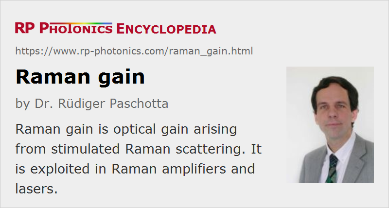

Raman Gain
Definition: optical gain arising from stimulated Raman scattering
German: Raman-Verstärkung
Categories: nonlinear optics, physical foundations
Formula symbol: gR
Units: %, dB
How to cite the article; suggest additional literature
Author: Dr. Rüdiger Paschotta
Raman gain is optical gain (amplification) arising from stimulated Raman scattering. It can occur in transparent solid media (e.g. optical fibers), liquids and gases under the influence of intense pump light, and is used in Raman amplifiers and Raman lasers. Its magnitude depends on the optical frequency offset between pump and signal wave, to some smaller extent on the pump wavelength, and on material properties. Compared with laser gain e.g. in rare-earth-doped gain media, Raman gain requires higher pump intensities and/or longer interaction lengths, has substantially different saturation characteristics, and a gain spectrum which depends on the wavelength of the pump light.
The interaction between some narrow-band pump wave and a Stokes-shifted wave (with a lower optical frequency) via stimulated Raman scattering can be described with the following coupled differential equations:
where Ip and Is are the optical intensities (with units of W/m2), νp and νs the optical frequencies of the two beams, and gR is the Raman gain coefficient, which is e.g. of the order of 10−13 m/W for silica fibers. It is assumed that both beams fully overlap and propagate in the z direction. Of course, additional terms can be added to the equations, e.g. in order to include spontaneous Raman scattering and linear propagation losses.
The equations show that the Stokes waves experiences a local gain coefficient gR Ip, whereas the pump wave loses some more energy than is transferred to the Stokes wave. This is because one pump photon is converted into one Stokes photon (with lower energy) and a phonon. The phonon energy corresponds to the difference of photon energies. This lost optical energy is converted into heat.
Due to the rather low value of the Raman gain coefficients e.g. of typical silica fibers, strong Raman conversion requires many meters of fiber if the optical powers are limited to a few watts. For optical pulses, e.g. with nanosecond pulse durations, where the peak powers can be much higher (many kilowatts), strong Raman conversion may occur even within short lengths of fiber (see Figure 1).
The Raman gain coefficient depends mainly on the difference in optical frequencies, but also to some extent on the pump frequency and the polarization directions. Figure 2 shows the Raman gain for silica as a function of the frequency difference, assuming equal linear polarizations of both beams. There is a maximum Raman gain for a frequency offset of 13.2 THz. For example, a pump wave at 1064 nm leads to the largest Raman gain at a signal wavelength of 1116 nm. The peaks in the Raman spectrum correspond to certain vibration modes of the silica structure.
The modeling of stimulated Raman scattering for broadband beams and particularly for ultrashort pulses is significantly more involved. It can be based on, e.g., a Raman response function h(t), describing the delayed temporal response of the nonlinear polarization to the electric field [2, 4, 6].
The Raman gain can be fairly strong in optical fibers, where substantial optical intensities can be maintained over long lengths. When the Raman gain corresponding to some optical wave exceeds the order of 70 dB, substantial power is transferred to a Stokes wave, even if there is no Stokes input to the fiber. This effect can limit the performance of high-power fiber lasers and amplifiers.
Questions and Comments from Users
Here you can submit questions and comments. As far as they get accepted by the author, they will appear above this paragraph together with the author’s answer. The author will decide on acceptance based on certain criteria. Essentially, the issue must be of sufficiently broad interest.
Please do not enter personal data here; we would otherwise delete it soon. (See also our privacy declaration.) If you wish to receive personal feedback or consultancy from the author, please contact him e.g. via e-mail.
By submitting the information, you give your consent to the potential publication of your inputs on our website according to our rules. (If you later retract your consent, we will delete those inputs.) As your inputs are first reviewed by the author, they may be published with some delay.
Bibliography
| [1] | R. H. Stolen and E. P. Ippen, “Raman gain in glass optical waveguide”, Appl. Phys. Lett. 22 (6), 276 (1973), doi:10.1063/1.1654637 |
| [2] | K. J. Blow and D. Wood, “Theoretical description of transient stimulated Raman scattering in optical fibers”, IEEE J. Quantum Electron. 25 (12), 2665 (1989), doi:10.1109/3.40655 |
| [3] | J. Bromage et al., “A method to predict the Raman gain spectra of germanosilicate fibers with arbitrary index profiles”, IEEE Photon. Technol. Lett. 14 (1), 24 (2002), doi:10.1109/68.974149 |
| [4] | D. Hollenbeck and C. D. Cantrell, “Multiple-vibrational-mode model for fiber-optic Raman gain spectrum and response function”, J. Opt. Soc. Am. B 19 (12), 2886 (2002), doi:10.1364/JOSAB.19.002886 |
| [5] | X. Yan et al., “Raman transient response and enhanced soliton self-frequency shift in ZBLAN fiber”, J. Opt. Soc. Am. B 29 (2), 238 (2012), doi:10.1364/JOSAB.29.000238 |
| [6] | G. P. Agrawal, Nonlinear Fiber Optics, 4th edn., Academic Press, New York (2007) |
See also: nonlinearities, Raman scattering, Raman amplifiers, Raman lasers, silica fibers, The Photonics Spotlight 2010-03-03
and other articles in the categories nonlinear optics, physical foundations
|  |
If you like this page, please share the link with your friends and colleagues, e.g. via social media:
These sharing buttons are implemented in a privacy-friendly way!